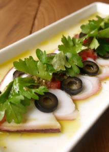

タコのカルパッチョ
たこは低脂肪、低カロリーなだけでなく、コレステロールの上昇を抑える働きのあるタウリンが含まれます。
レモン果汁などさわやかな酸味、セロリやかいわれ菜などの香りのある野菜を上手に加えると、塩分を抑えてもおいしいおつまみになります。
材料表（3～4人分）
| 茹でダコ | 150gくらい |
|---|---|
| 紫玉ねぎ | 普通の玉ねぎでも） 半個 |
| ☆オリーブオイル | 大匙3 |
| ☆レモン汁 | 大匙1 |
| ☆塩、黒こしょう | 少々 |
| ☆にんにくのすり下ろし | 小匙⅓くらい |
| パセリの微塵切り（乾燥パセリでも） | 適宜 |
調理手順
- 紫玉ねぎは薄切りにし、水にさらしフキン等で良く水気を絞る。タコは2㎜位のそぎ切りにする。
- お皿に玉ねぎを敷き、タコをのせ、☆の混ぜたものをかけ、パセリをトッピングして完成です。
- 冷蔵庫で冷やして召し上がれ。
用語説明
- 砂抜き
- アサリ、蛤、シジミなどの殻付き貝を調理する前に、中の砂をはかせること。
- イタリアンパセリ
- 日本でパセリ（オランダせり）と呼ばれているものに比べると葉が平たく、風味や香りが柔らかいのが特徴。